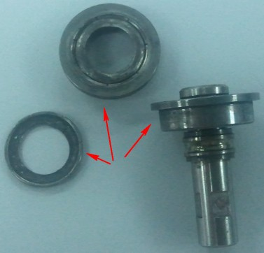

Service History
Subject: NS-8040 Output Shuttle's Miniature Bear worn out
Customer: Infineon Technologies Asia Pacific Pte Ltd
Handler Model: NS-8040 (NS-100)
Handler S/N: 181213
Mfg: Mar 2007
Controller: RC520
HMI ver: F10.14-SIS
Date: 3 Oct 2010
Symptom
1) NS-8040 (NS-100) shuttle stuck during motion.
2) Ball bearing found near Output shuttle.
3) Removed Output Shuttle's pulley assembly and found miniature bearing (8NS14a-10) of shuttle pulley N.G.
4) Suspect ball bearing from miniature bearing during high force seizure of motion.
5) Lead time 1 month and customer unable to wait.
6) Office handler pulley design different but better to purchase and replace instead of removing from handler.

Action
10 Oct 2011 Miniature bearing x02 pcs replaced.
Cause
Remarks
Miniature bearing R33ZT80133500 (Model: F698ZZ) (8NS14a-10 ) - 1 set is 2 pieces
Refer S0500.